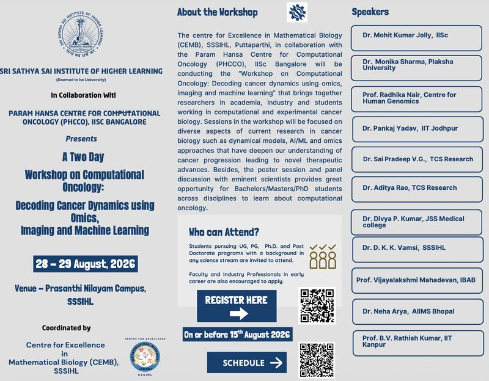

Dr. Monika Sharma to serve as a resource person at computational oncology workshop
Dr. Monika Sharma will serve as a resource person for a two-day workshop on computational oncology, organized by CEMB, SSSIHL, Puttaparthi, in collaboration with PHCCO, IISc Bengaluru.